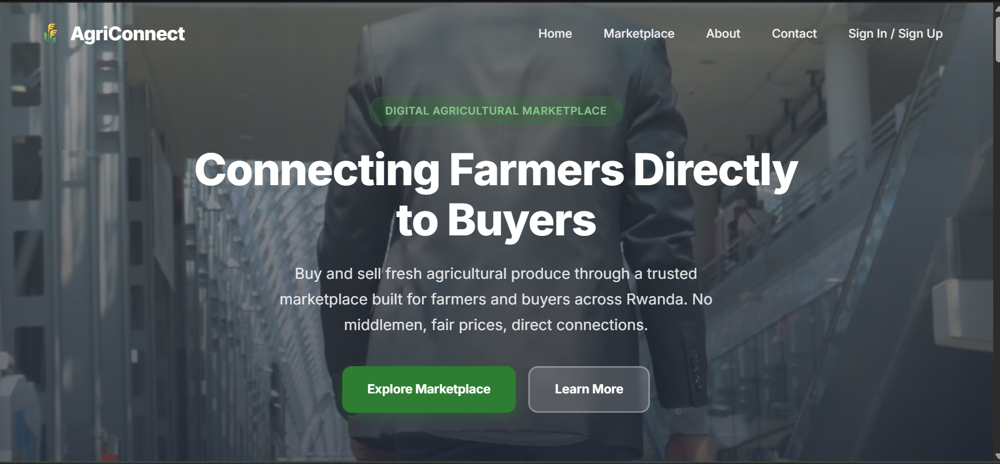

DIGITAL SOLUTION • WEB APPLICATION
AgriConnect
A digital agricultural marketplace developed to connect agricultural products and users through a web-based platform.

Project Overview
AgriConnect is a web application project focused on applying digital technology to an agricultural marketplace concept.
The project demonstrates how a business idea can be translated into a functional digital platform with a backend, database and user-facing interface.
Technology
Node.js
Express.js
MongoDB
REST API
Cloudinary
Business Problem
Agricultural products and marketplace activities can benefit from digital platforms that make it easier to present products, manage information and connect users.
AgriConnect explores this concept by creating a centralized digital marketplace environment.
Solution
The project combines a web interface with a backend application and database to manage marketplace information.
The architecture demonstrates how different components of a digital business solution can work together.
Technical Implementation
Backend
Node.js and Express.js are used to build the backend application and API layer.
Database
MongoDB is used to store and manage application data.
API
REST API architecture connects the application interface with backend services.
Media Management
Cloudinary is used to support image and media management within the application.
What This Project Demonstrates
This project demonstrates practical problem-solving, understanding of digital business processes and the ability to work across different components of a technology-enabled solution.
While my primary professional focus is data analysis and business intelligence, projects such as AgriConnect strengthen my understanding of how data and digital systems support real-world business operations.